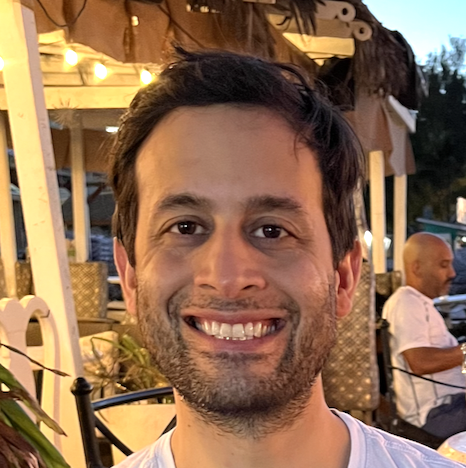

 I am an assistant professor at the University of Toronto, jointly appointed in the Faculty of Information and the Department of Statistical Sciences. I am interested in developing workflows that improve the trustworthiness of data science and tend to be especially focused on the role of code and testing.
I co-founded The Data Workshop, a weekly, free, online, seminar series that brings together academia and industry to share data science and AI best practice. You can sign up here.
My book, Telling Stories With Data, argues that a trustworthiness revolution is needed in data science, and proposes a view of what it could look like. It has been strongly endorsed, including: Andrew Gelman "I absolutely love this book", Kosuke Imai "I highly recommend this unique book!", Sir David Spiegelhalter "[A]n extraordinary, wonderful, book...", Daniela Witten "An excellent book", and Richard McElreath "This is not another statistics book. It is much better than that." You can buy a print copy here and you can access the free online version here.
I hold a PhD in Economics from the Australian National University where I focused on economic history and was supervised by John Tang (chair), Martine Mariotti, Tim Hatton, and Zach Ward.
I am married to Monica Alexander, and we have two young children.